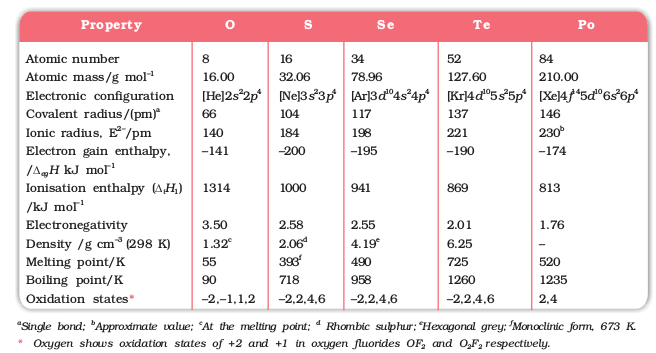
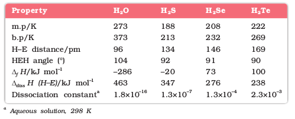

7.10 Group 16 Elements
Oxygen, sulphur, selenium, tellurium and polonium constitute Group 16 of the periodic table. This is sometimes known as group of chalcogens. The name is derived from the Greek word for brass and points to the association of sulphur and its congeners with copper. Most copper minerals contain either oxygen or sulphur and frequently the other members of the group.
7.10.1 Occurrence
Oxygen is the most abundant of all the elements on earth. Oxygen forms about 46.6% by mass of earth’s crust. Dry air contains 20.946% oxygen by volume.
However, the abundance of sulphur in the earth’s crust is only 0.03-0.1%. Combined sulphur exists primarily as sulphates such as gypsum CaSO4.2H2O, epsom salt MgSO4.7H2O, baryte BaSO4 and sulphides such as galena PbS, zinc blende ZnS, copper pyrites CuFes2. Traces of sulphur occur as hydrogen sulphide in volcanoes. Organic materials such as eggs, proteins, garlic, onion, mustard, hair and wool contain sulphur.
Selenium and tellurium are also found as metal selenides and tellurides in sulphide ores. Polonium occurs in nature as a decay product of thorium and uranium minerals.
The important atomic and physical properties of Group16 along with electronic configuration are given in Table 7.6. Some of the atomic, physical and chemical properties and their trends are discussed below.
7.10.2 Electronic Configuration
The elements of Group16 have six electrons in the outermost shell and have ns2nP4 general electronic configuration.
7.10.3 Atomic and Ionic Radii
Due to increase in the number of shells, atomic and ionic radii increase from top to bottom in the group. The size of oxygen atom is, however, exceptionally small.
7.10.4 Ionisation Enthalpy
Ionisation enthalpy decreases down the group. It is due to increase in size. However, the elements of this group have lower ionisation enthalpy values compared to those of Group15 in the corresponding periods. This is due to the fact that Group 15 elements have extra stable half-filled p orbitals electronic configurations.
7.10.5 Electron Gain Enthalpy
Because of the compact nature of oxygen atom, it has less negative electron gain enthalpy than sulphur. However, from sulphur onwards the value again becomes less negative upto polonium.
7.10.6 Electronegativity
Next to fluorine, oxygen has the highest electronegativity value amongst the elements. Within the group, electronegativity decreases with an increase in atomic number. This implies that the metallic character increases from oxygen to polonium.
Example 7.10
Elements of Group 16 generally show lower value of first ionisation enthalpy compared to the corresponding periods of group 15. Why?
Solution
Due to extra stable half-filled p orbitals electronic configurations of Group 15 elements, larger amount of energy is required to remove electrons compared to Group 16 elements.
7.10.7 Physical Properties
Some of the physical properties of Group 16 elements are given in Table 7.6. Oxygen and sulphur are non-metals, selenium and tellurium metalloids, whereas polonium is a metal. Polonium is radioactive and is short lived (Half-life 13.8 days). All these elements exhibit allotropy. The melting and boiling points increase with an increase in atomic number down the group. The large difference between the melting and boiling points of oxygen and sulphur may be explained on the basis of their atomicity; oxygen exists as diatomic molecule (O2) whereas sulphur exists as polyatomic molecule (S8).
7.10.8 Chemical Properties
Oxidation states and trends in chemical reactivity
The elements of Group 16 exhibit a number of oxidation states (Table 7.6). The stability of -2 oxidation state decreases down the group. Polonium hardly shows –2 oxidation state. Since electronegativity of oxygen is very high, it shows only negative oxidation state as –2 except in the case of OF2 where its oxidation state is + 2. Other elements of the group exhibit + 2, + 4, + 6 oxidation states but + 4 and + 6 are more common. Sulphur, selenium and tellurium usually show + 4 oxidation state in their compounds with oxygen and + 6 with fluorine. The stability of + 6 oxidation state decreases down the group and stability of + 4 oxidation state increases (inert pair effect). Bonding in +4 and +6 oxidation states is primarily covalent.
Table 7.6: Some Physical Properties of Group 16 Elements
Anomalous behaviour of oxygen
The anomalous behaviour of oxygen, like other members of p-block present in second period is due to its small size and high electronegativity. One typical example of effects of small size and high electronegativity is the presence of strong hydrogen bonding in H2O which is not found in H2S.
The absence of d orbitals in oxygen limits its covalency to four and in practice, rarely exceeds two. On the other hand, in case of other elements of the group, the valence shells can be expanded and covalence exceeds four.
(i) Reactivity with hydrogen: All the elements of Group 16 form hydrides of the type H2E (E = O, S, Se, Te, Po). Some properties of hydrides are given in Table 7.7. Their acidic character increases from H2O to H2Te. The increase in acidic character can be explained in terms of decrease in bond enthalpy for the dissociation of H–E bond down the group. Owing to the decrease in enthalpy for the dissociation of H–E bond down the group, the thermal stability of hydrides also decreases from H2O to H2Po. All the hydrides except water possess reducing property and this character increases from H2S to H2Te.
Table 7.7: Properties of Hydrides of Group 16 Elements
(ii) Reactivity with oxygen: All these elements form oxides of the EO2 and EO3 types where E = S, Se, Te or Po. Ozone (O3) and sulphur dioxide (SO2) are gases while selenium dioxide (SeO2) is solid. Reducing property of dioxide decreases from SO2 to TeO2; SO2 is reducing while TeO2 is an oxidising agent. Besides EO2 type, sulphur, selenium and tellurium also form EO3 type oxides (SO3, SeO3, TeO3). Both types of oxides are acidic in nature.
(iii) Reactivity towards the halogens: Elements of Group 16 form a large number of halides of the type, EX6, EX4 and EX2 where E is an element of the group and X is a halogen. The stability of the halides decreases in the order F– > Cl– > Br– > I–. Amongst hexahalides, hexafluorides are the only stable halides. All hexafluorides are gaseous in nature. They have octahedral structure. Sulphur hexafluoride, SF6 is exceptionally stable for steric reasons.
Amongst tetrafluorides, SF4 is a gas, SeF4 a liquid and TeF4 a solid. These fluorides have sp3d hybridisation and thus, have trigonal bipyramidal structures in which one of the equatorial positions is occupied by a lone pair of electrons. This geometry is also regarded as see-saw geometry.
All elements except selenium form dichlorides and dibromides. These dihalides are formed by sp3 hybridisation and thus, have tetrahedral structure. The well known monohalides are dimeric in nature. Examples are s2F2, s2Cl2, s2Br2, Se2Cl2 and Se2Br2. These dimeric halides undergo disproportionation as given below:
2Se2Cl2 → SeCl4 + 3Se
Example 7.11
H2S is less acidic than H2Te. Why?
Solution
Due to the decrease in bond (E–H) dissociation enthalpy down the group, acidic character increases.